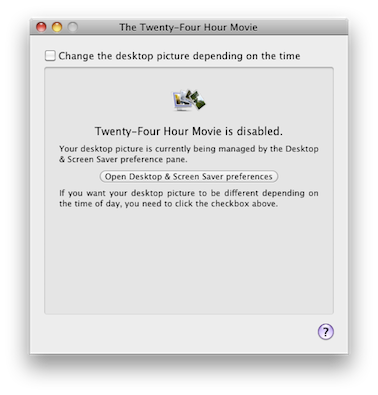

How to turn off the program
If you would like System Preferences to set your desktop (like it normally is with most Macs), you can disable The Twenty-Four Hour Movie. You can later re-enable it any time you want to use its features.
Disabling the program:
-
Open The Twenty-Four Hour Movie application.
-
If the checkbox “Change the desktop picture depending on the time” is checked, uncheck it.
You should see a window similar to this:

Even though your desktop will not immediately change, the program is disabled and is no longer setting your desktop. You should now open the Desktop & Screen Saver preference pane to set your desktop to something else.